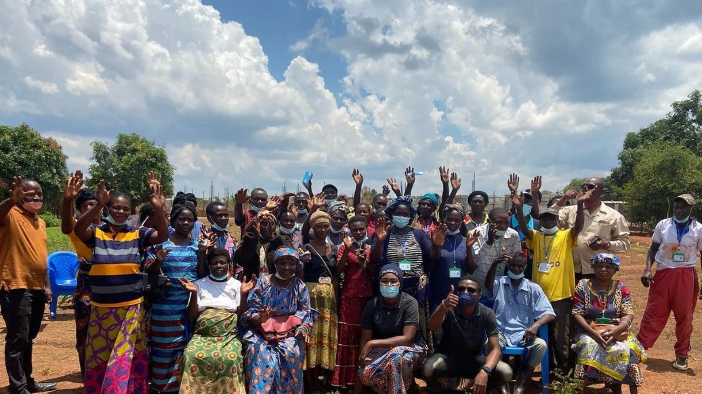

Physiotherapy
Our physiotherapy ward provides rehabilitation and physical therapy to help restore movement, manage pain and rebuild strength during recovery.
St. Martha Hospital in Kiminini, Trans Nzoia, brings consultation, diagnostics, a pharmacy, maternity care, prevention and rehabilitation together in one place. This page shows what we offer and where to find it.
Outpatient care
Most visits begin with an assessment. A member of our clinical team checks how urgently you need to be seen and records the basic measurements your doctor needs, then you see a doctor for consultation.
Diagnostics
Our laboratory supports your doctor with testing, including blood testing and other laboratory investigations, so that diagnosis and treatment are based on results.
The laboratory is a diagnostic facility, separate from the pharmacy.
Hospital pharmacy
St. Martha has its own pharmacy within the hospital, so medicines prescribed during your visit can be collected on site.
Maternal health
Maternity care is one of the hospital’s core services, supporting mothers through pregnancy and after. This includes antenatal consultations and postnatal check-ups.
To find out which maternity services are available for your situation, please call us on +254 731 948 998.
Prevention
A dedicated preventive service that helps protect individuals and families from vaccine-preventable disease. Ask our team about the vaccines and schedules that apply to you.
Procedures
Minor procedures are carried out by our clinical team, with assessment before and guidance afterwards.
St. Martha provides minor procedures only. We do not offer major surgery.
Recovery and wellbeing
Our physiotherapy ward provides rehabilitation and physical therapy to help restore movement, manage pain and rebuild strength during recovery.
Mental health is part of your health. We offer a confidential, respectful place to talk about how you are coping and to be guided toward the right support.
Rooms where patients can rest or be observed by our clinical team during a visit.

Beyond the hospital
Our team also carries out health check-ups outdoors, in the community, bringing basic care closer to people who may not visit the hospital.
See our programsSt. Martha Hospital does not operate a full emergency department. We can attend to certain urgent situations and will assess you on arrival.
For severe or life-threatening emergencies, go to the nearest emergency facility. If you are unsure, call us first on +254 731 948 998.
Book an appointment online or call the hospital, and our team will confirm with you.
Book appointment